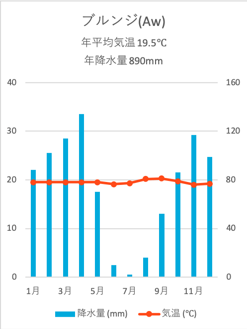
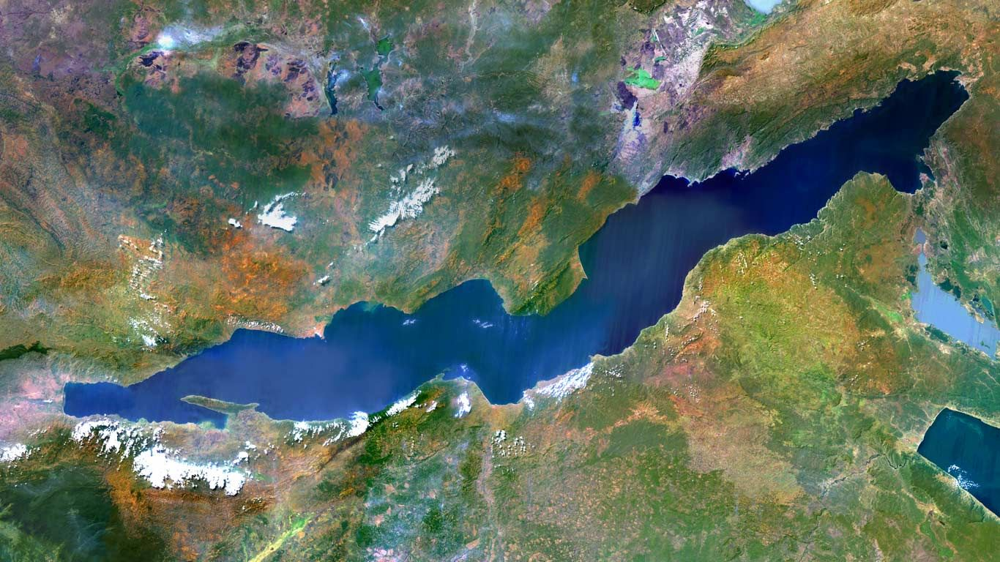
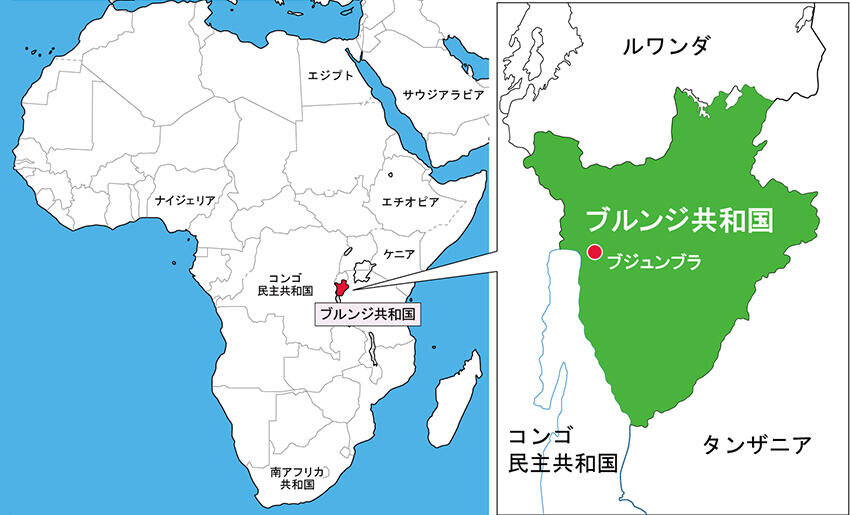
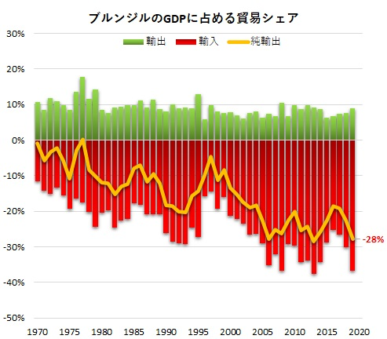

東アフリカの内陸国です。ルワンダ、コンゴ民主共和国、タンザニアと国境を接します。

国土の大部分は標高1500メートル以上で、「アフリカのスイス」とも呼ばれています。地理的には熱帯気候エリアに属していますが、標高が高いため、比較的涼しい気候です。
ブルンジには、タンガニーカ湖と呼ばれるバイカル湖に次ぐ世界で 2 番目に古い湖があります。世界でも固有種の多い湖として有名で，ここに生息する魚の約 80％，貝類の約 90％が固有種です。湖の魚は周辺地域に住む人々の主要なタンパク源となっています。
交通面では、日本からの直行便はなく、2つの直行便があります。
1.ナイロビ(ケニア)からブジュンブラ(ブルンジ)☜約1時間半
2.アディスアベバ(エチオピア)からブジュンブラ(ブルンジ)☜約2時間
ブルンジは経常的に貿易赤字構造となっており、さらに貿易赤字の比率は増加傾向にあります。 
また、最大の輸出相手国はアラブ首長国連邦で、輸入相手国もアジアの地域が上位を占めています。このことから、貿易においてアジアとの結びつきが強いことがわかります。
ブルンジ共和国には数多くの野生動物が生息している公園がいくつもあります。「ルヴブ国立公園」は、世界的にも群を抜いた大きさで様々な野生動物が生息しています。
植民地期に煽られたフツ人とツチ人の衝突から引き起こされた虐殺・内戦により、多大なる傷跡を抱える世界最貧国の一つです。現在も紛争の影響を受け、元子ども兵や孤児など国民の大多数は 1日1ドル以下で生活する最貧困層に陥っています。